שבועיים באירלנד- חלק 1
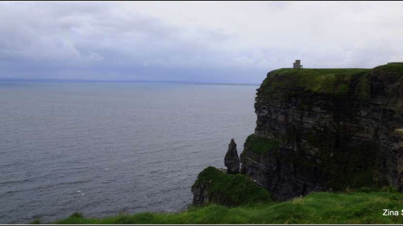
אירלנד - ספטמבר 2012 - חלק 1 מזה הרבה זמן רציתי לטייל באירלנד ובמאי 2012 החלטתי שזהו - נוסעים. הזמנו כרטיסים דרך חברת SWISS עם קונקשן בציריך, הזמנו רכב (למרות החששות מנהיגה בצד שמאל) וב-7/9/12 בשעות הבוקר נחתנו בדבלין. החלטנו להקיף את כל האי ולא להתמקד במקום אחד, מצד אחד הקצב היה די מהיר מצד שני אנחנו בהחלט מתכננים לחזור וככה נדע לאיזה מקומות נרצה לחזור :).
לכל התמונות מהטיול: https://www.flickr.com/photos/127066806@N05/sets/72157648228850728/
יום 1 - דאבלין
נחתנו, קיבלנו את הרכב (סוכנות dooly המקומית) שודרגנו לפורד פלואנס איזה כיף! אנחנו נכנסים לרכב ו... הכל הפוך!!! כן כן מלחיץ מאוד. טוב, החלטנו שבעלי יתרגל נסיעה בחניון של שדה התעופה עד שיתרגל קצת לגיר ידני ועוד הפוך... אחרי כ-10 דקות של נסיעה בחנייה היינו מוכנים לנסיעת מבחן סביב שדה התעופה, יצאנו לכביש והופה, מצאנו את עצמנו על הכביש המהיר הנוסע לדבלין! איך לתאר נסיעה של חצי שעה שבמהלכה לשנינו הופיעו שערות לבנות? בכל פעם שבא רכב מצד ימין בעלי נצמד לשמאל בזעקות אימה ואני רעדתי מפחד שהינה אנחנו כבר נכנסים במדרכה! וככה נכנסנו לעיר בחיפוש אחר ה-B&B שלנו (שהזמנתי מראש - abbeyleigh house), אחרי שהורדנו כמה מראות של רכבים חונים הצלחנו במשימה והגענו למקום- איזה הקלה.
הB&B נמצא יחסית במרכז דבלין כ10 דקות הליכה מפארק סטפן ומרכז העיר. רמה סבירה בעלות של 80 יורו לזוג ללילה (בהמשך גילינו שבשאר אירלנד המחירים הרבה יותר זולים). אז אחרי שפרקנו את החפצים יצאנו לטייל בעיר. דאבלין היא עיר חמודה מאוד שבה חיים כמחצית מתושבי אירלנד. טיילנו בפארק סטפן, שם הופתענו לגלות בשתיים אחר הצהוריים מבלים מרבית תושבי דבלין ברביצה על הדשא ביום שמש (אין עבודה?)
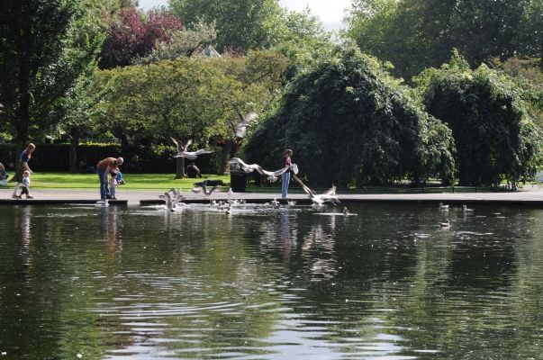
משם המשכנו לטריניטי קולדג', לרחוב גרפטון במלא חניות וכמובן לארוחת צהוריים מאוחרת בטמפל באר - רחוב הפאבים של דבלין.
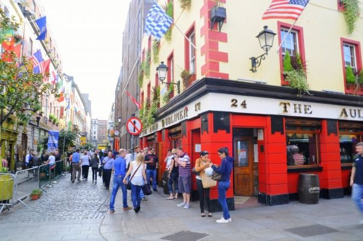
אחרי ששבענו טיילנו קצת במצודת דאבלין, צעדנו לאורך נהר הליפי וחזרנו מותשים בשמונה בערב (אחרי לילה לבן בגלל הטיסה) לחדר לשינה טובה לקראת מחר.
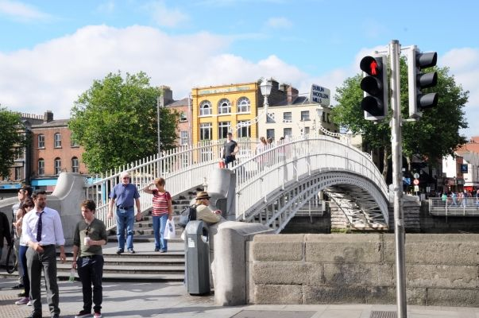
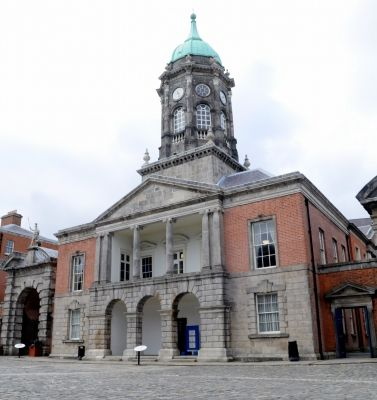
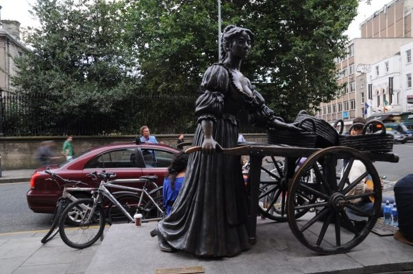
יום 2 - הרי ויקולו
קמנו לארוחת בוקר מפנקת של בייקון (לבעלי) וחביתה וקורנפלקס בשבילי, לאחר שסעדנו יצאנו להתמודד עם כבישי אירלנד פעם נוספת. הפעם יהיה יותר קל כי נוסעים לאזור הכפרי. בחוץ יום קיצי ויפה.
התחלנו את הבוקר באחוזת פאוורסקורט (בית שהפך למוזיאון כניסה 8.5 יורו, פתוח מ-9:30-17:30), אנחנו טיילנו בעיקר בגנים שהם ממש מרשימים ונשקף משם נוף מדהים על האזור (ברקע הר הסוכר והרי הויקולו).
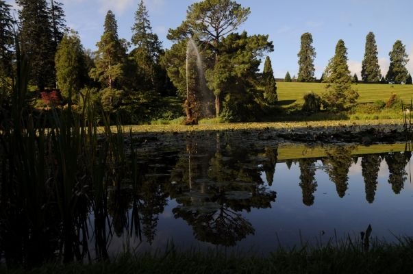
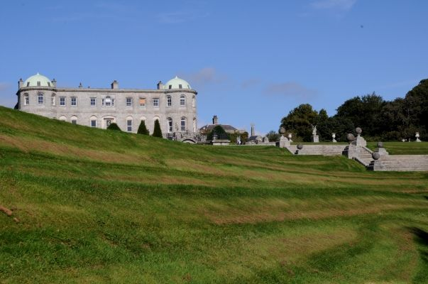
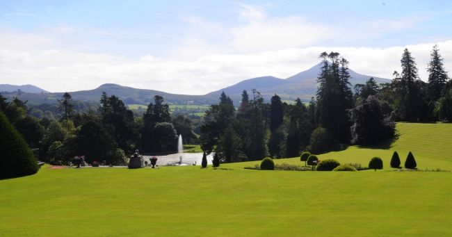
אחרי שמיצינו את הגנים נסענו למפל (5 יורו כניסה) נסיעה של כ-5 ק"מ מהאחוזה. אין ספק שהמקום מרשים, המפל נופל מגובה רב, באזור יש גם קפיטריה. אכלנו גלידה למרגלות המפל והמשכנו הלאה.
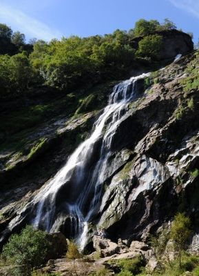
התחנה הבאה היא הדרך הצבאית – דרך צרה ומפותלת שעוברת בהרי הויקולו שנסללה בשנות ה-70, הנוף משגע, אמנם הנסיעה כ 30 קמ"ש ורוחב הכביש מספיק בקושי לרכב אחד (למרות שהכביש דו סטרי), התפללנו שלא נתקל ברכב שבא ממול, אולם מזלנו לא שפר עלינו וכמה פעמים נאלצנו להיצמד ממש לקצה כדי לתת לרכב לעבור (שגם הוא נצמד לשולים ככל יכולתו), עברנו דרך ה-sally gap וצפינו על אגם טי (ניתן לטייל עד לאגם עצמו, אולם אנחנו החלטנו להמשיך הלאה).
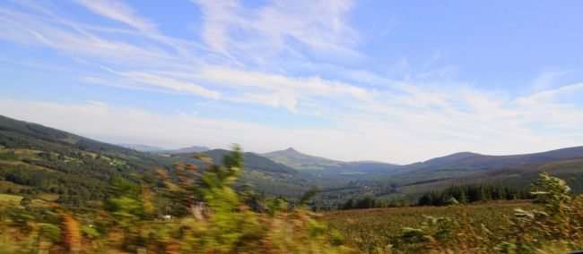
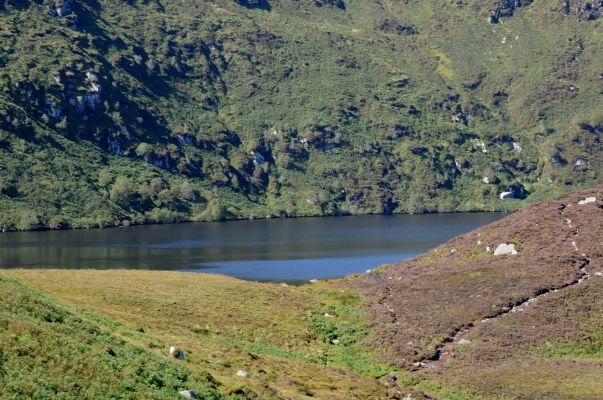
לאחר נסיעה של כשעתיים הגענו לשיא של היום הזה- גלנדלוך! עמק שני האגמים. המקום פשוט מדהים! הכל ירוק, פורח ומוקף הרים ויערות מסביב. הכניסה היא חינם, במקום יש מסעדה לא רעה בכלל. באזור הזה יש המון מקומות לינה והמלצתי היא לטייל במקום לפחות כמה ימים יש המון מסלולים לטיול. אנחנו הקפנו את שני האגמים המדהימים (לא להתעצל ולהמשיך לאגם השני – הליכה של כקילומטר וחצי). המקום עצמו היה בעבר ישוב על נזירים ויש שרידים של ההתיישבות שם. בצער רב עזבנו את המקום והמשכנו לעיירה קילקני ללינה (נסיעה של כשעה וחצי משם).
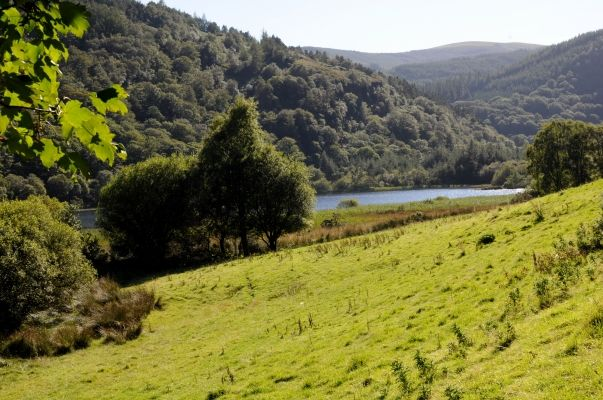
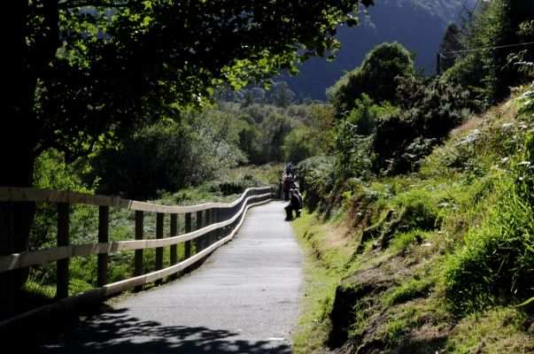
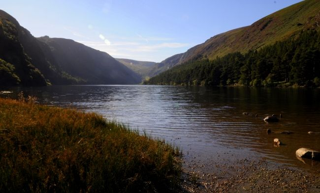
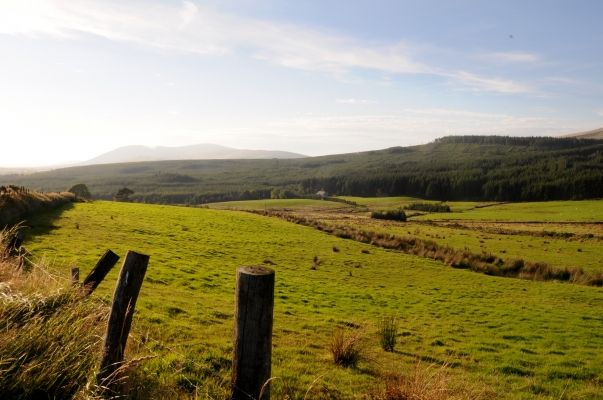
לגבי מקומות לינה- חוץ מביום הראשון לא טרחנו להזמין לינה כדי להיות גמישים, הB&B באירלנד צצים כמו פטריות אחרי הגשם כך שאין מה לדאוג- יש לינה בכל מקום אפשרי! בקילקני התמקמנו ב- celtic house בעלות של 60 יורו לזוג) חמש דקות הליכה מהמרכז. קיבלנו חדר ממש חמוד בעליית גג (נשמע רע אבל חדר מעולה) והמקלחת... זו היתה המקלחת הכי טובה אי פעם, הזרם כלכך חזק וחמים פשוט תענוג אחרי יום ארוך).
בעיירה יש טירה יפה, אבל אנחנו היינו רעבים אז התמקדנו באוכל – ולא חסר, יש פאבים ומסעדות בכל פינה! ואם כבר מדברים על אוכל אז טיפ חשוב – באירלנד לא בכל פאב יש מטבח, מרבית הפאבים מגישים שתייה בלבד אפילו בלי נשנושים. מסעדות ופאבים שמגישים אוכל סוגרים את המטבח בעשר בערב ככה שאם הגעתם אחרי תישארו רעבים, כי אין איפה לאכול. הפתרון היצירתי למצב כזה הוא פשוט להיכנס לפאב ולהזמין גינס (הבירה שם לא כמו בארץ, היא לא תוססת וממש מרגישים את השמרים). אפשר להגיד שאחרי כוס אחת הרגשתי כאילו אכלתי ארוחת ערב שלמה J.
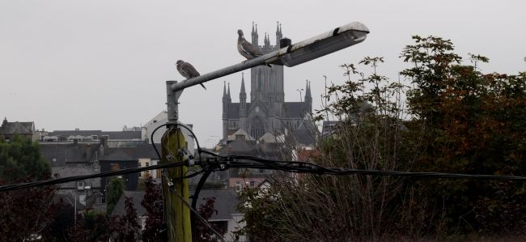
יום 3: נוסעים דרומה
קמנו לבוקר מעונן מאוד, אחרי ארוחת בוקר מזינה (כרגיל) אנחנו נוסעים דרומה. התחנה הראשונה שלנו היא צוק קאשל, מדובר במבצר קלטי עתיק שהוסב לכנסיה נוצרית. כניסה: 5.5 יורו שעות פתיחה: 9-17:00. יש אפשרות להצטרף לסיור במקום. המקום קטן מאוד אבל חביב, הדבר המפתיע הוא שהיינו ביום ראשון והעיירה מסביב פשוט הפכה לעיירת רפאים! הכל סגור! וזה יחסית מקום מתוייר, בקושי יש גלידריה פתוחה באיזור...
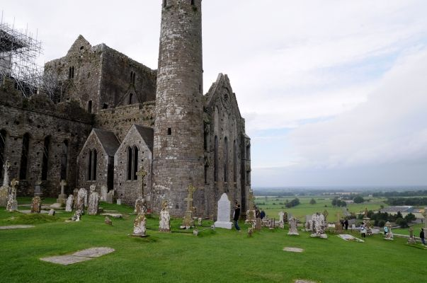
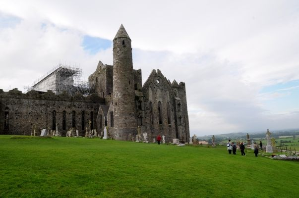
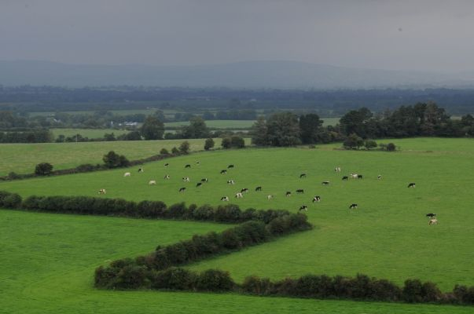
אז אחרי סיבוב במקום המשכנו הלאה - מזקקת ג'יימסון במידלטון (ליד קורק). אתחיל ואומר שמי שלא כלכך מתעניין בויסקי מומלץ לוותר יש מספיק מזקקות גם בדאבלין ובצפון אירלנד (בושמילס) וחבל לעשות סיבוב עד לשם. אנחנו לא ידענו זאת ולכן נסענו עד למידלטון כדי ללמוד על תהליך יצירת הויסקי. עלות הכניסה 13 יורו (די יקר) ובסוף מקבלים כוסית ויסקי. סך הכל הסיור נחמד אבל לא ואוו... היינו, ראינו והמשכנו הלאה. בדרך חווינו מבול, אבל כשהגענו לעיירה קילארני נפסק הגשם.
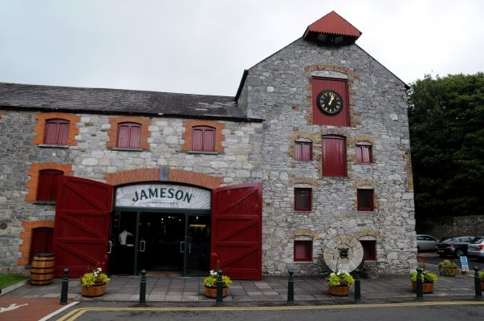
במקור רציתי לנסוע גם לכף מייזן אבל בגלל השעה החלטנו לוותר ולשים פעמנו לקילארני שבחצי האי קרי. העיירה מלאה ב-B&B ממש בכל פינה. המחירים כ-60 יורו לזוג. התמקמנו ויצאנו לטייל. העיירה חמודה, יש קניון גדול (שעובד מ-10 עד 6 בערב) והמון חניות קטנות במרכז העיר- כולל חנות סוודרים. יש המון מסעדות ופאבים. האווירה בפאבים פשוט כייפית, יש מוזיקה לייב, המון אירים שתויים ששרים בקולי קולות, ממש חוויה.
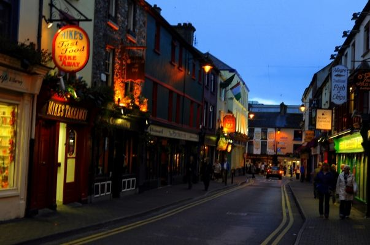
יום 4: חצי האי קרי
יום גשום מקדם את פנינו, חיכינו לשעה 10 כדי ללכת לקניון (בתקווה שאולי הגשם יפסק) משלא נספק הגשם התחדשנו בשתי מטריות והמשכנו במסלול. היום הוא בעיקר טבע ונופים. מתחילים בפארק הלאומי של קילארני. תחנה ראשונה בפארק היא ה- gap of Dunloe בגלל הגשם לא רואים כלום אז אני יוצאת לצילום חפוז וחוזרת לאוטו.
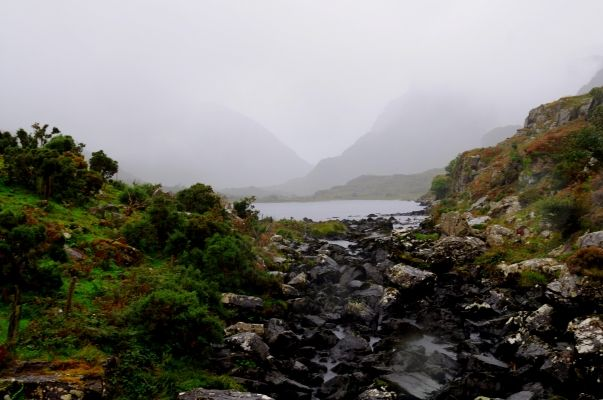
ממשיכים הלאה ל- טירת רוס אשר על שפת האגם, משם ניתן לקחת שיט אולם בגלל מזג האוויר אין מעוניינים. ממשיכים להקיף את הפארק ומגיעים למנזר מוקרוס - או לשרידי המנזר, אם לא הגשם המקום ממש יפה וכן יש מסלולים יפים על גדת האגם אולם כרגע זה נראה יותר כמו ביצה שנשפכת לאגם... הלאה למפל טורק אשר נמצא בתוך יער. המפל מרשים, וכן ניתן לטפס על ההר לתצפית יפה על האזור אבל עדיין יורד גשם אז אנחנו מוותרים וחוזרים להתחמם באוטו.
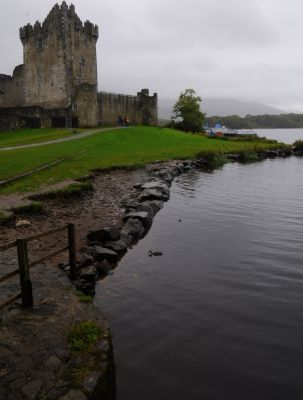
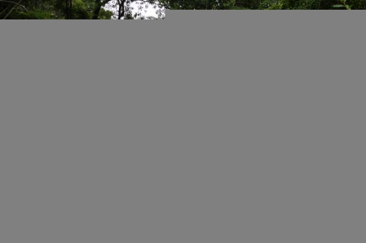
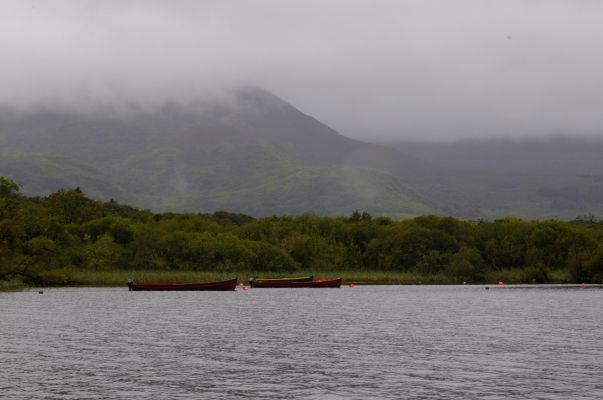
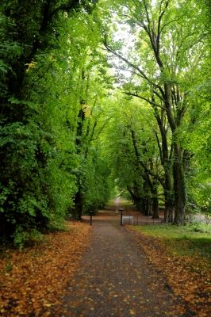
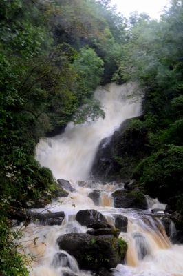
ממשיכים להקיף את חצי האי קרי, העצירה הבאה היא Ladies View המקום שבו עמדה המלכה ויקטוריה וצפתה על שלושת האגמים של הפארק וכינתה את המקום כיפה ביותר. אנחנו גם צפינו על שלושת האגמים - מדהים! במקום יש בית קפה חמוד אז החלטנו לעצור להפסקת קפה ולטעום סוף סוף קפה אירי! אז ממה מורכב קפה אירי? קצת קפה שחור מעליו מוזגים ג'יימסון (או ויסקי אירי אחר) שכבת חלב ושכבת קצפת, הטעם - מעולה!!! כלכך טעים ומחמם אחרי יום שטוף גשם, ואנחנו ממשיכים הלאה.
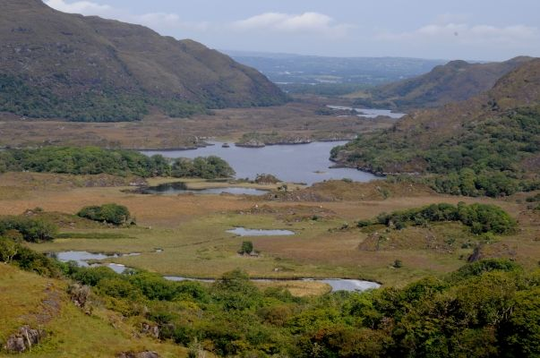
הגענו ל- moll's gap איזור יפיפה! גבעות נחלים והמוני כבשים שמטיילות להן בנחת בין הרכבים החולפים המקום פשוט מדהים. אנחנו ממשיכים לנסוע ואני לא מספיקה לצלם. מזג האוויר מתבהר והיני נגלה לו האוקיינוס האטלנטי עם עניי הסערה מעל, מחזה מרשים.
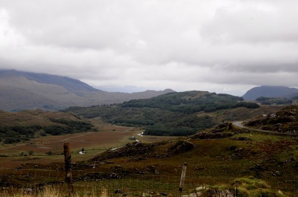
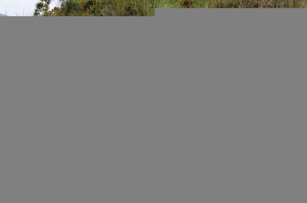
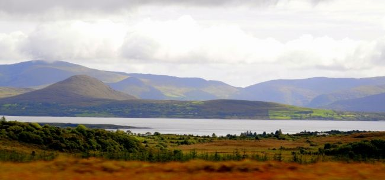
אנחנו חולפים על פני העיירה סנים לכיוון ה- stague fort שרידי מצודה עגולה (מצודות נפוצות באירלנד עוד מימי השבטים הקלטים). אנחנו מטפסים בשביל צר (אפילו יותר מזה של הדרך הצבאית) ומגיעים לחווה. ליד הכניסה למתחם יש קופסא ועליה שלט: "עלות כניסה יורו" - אין שומר, אין מצלמות אין כלום! פשוט סומכים על טוב לבו של התייר... אנחנו משלמים יורו ונכנסים, הנוף משגע אחו ירוק ירוק מלא בנקודות לבנות (כבשים) המצודה האפורה והאוקיינוס הכחול- לא מפסיקים לצלם!
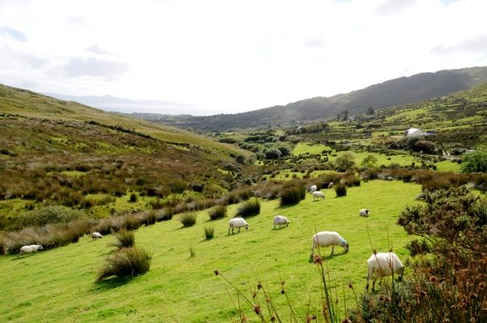
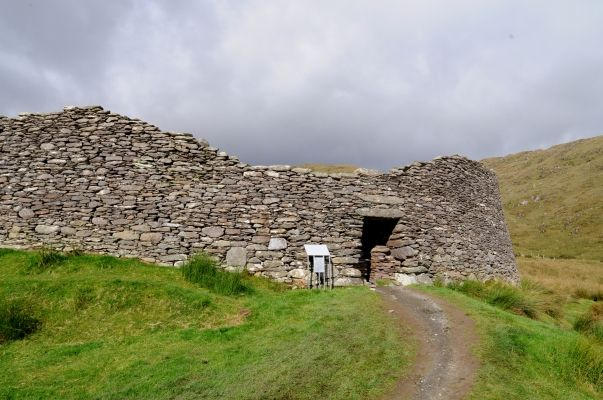
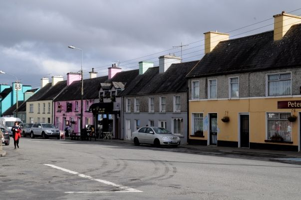
אנחנו מתלבטים אם להמשיך להקיף את חצי האי, אבל אנחנו רעבים אז חוזרים לסנים ואוכלים ארוחה מעולה! משם החלטנו לחתוך ישר לדינגל (שם כבר נעשה את הקפת חצי האי במלואה, קראתי שדינגל הרבה יותר מרשים מקרי - נגלה מחר.) אני מכוונת את ה-GPS ומתחילים לנסוע. אולם ל-GPS שלנו יש רצון משלו והוא החליט שהרבה יותר קצר יהיה לנסוע דרך דרכי החקלאים אשר חוצות את הגבעות- אז אנחנו "תופרים כיפות" ולהפתעתנו אפילו במקום שכוח אל זה יש שלטים שמכוונים ל-B&B!!!
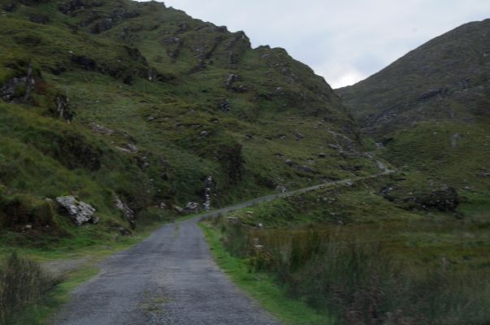
אגב בקטע הזה כמעט קרתה לנו תאונה, אחרי שכבשה החליטה לקפץ לה הממר ישר מתחת לגלגלים שלנו, אל תדאגו לכבשה שלום, ואנחנו מתפקעים מצחוק ממשיכים לנסוע...
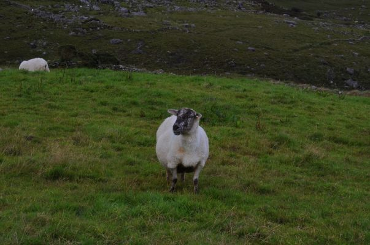
אחרי נסיעה של שעתיים בדרך לא דרך הגענו לדינגל, ומה מקדם את פנינו? שקיעה יפיפה! ענני סערה וים כסוף, אנחנו כלכך מתלהבים שמיד יוצאים מהרכב להצטלם ואז מכה בנו הקור! אנחנו רועדים מקור ולהפתעתנו ניגש אלינו אירי לבוש בשורט וגופיה ומציע לצלם אותנו, אנחנו שנינו קפואים ושיניים שלא מפסיקות לנקוש אבל מצטלמים על רקע הנוף וממשיכים לדינגל.
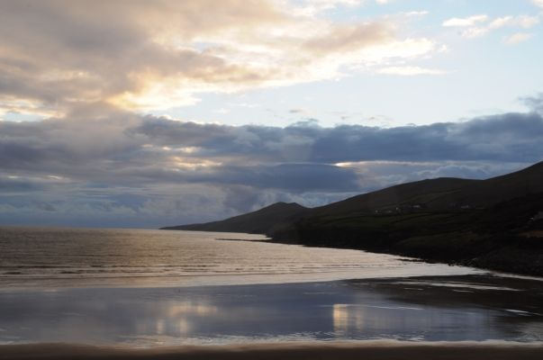
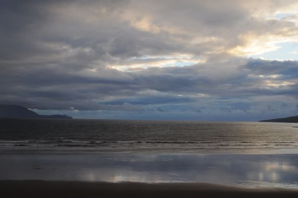
גם בדינגל יש המון B&B והמחירים נעים בין 50 ל80 יורו לזוג... אחרי חיפוש ממושך אנחנו מתמקמים בבית צנוע במרכז העיירה ויוצאים להתחמם באווירה אירית - גינס ומוזיקה!
שבועיים באירלנד - חלק 2
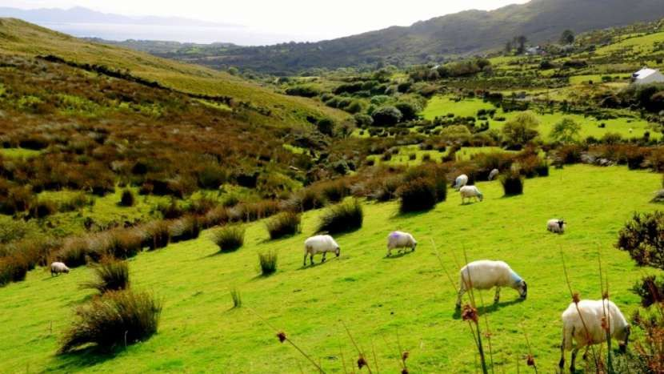
המשך של הטיול שלנו לאירלנד
לכל התמונות מהטיול: https://www.flickr.com/photos/127066806@N05/sets/72157648228850728/
יום 5: איים וצוקים
התחלנו את הבוקר בשיטוט בנמל דינגל, היה יום די סגרירי אז החלטנו לבדוק את האקווריום המקומי בתקווה שאולי היום יתבהר. האקווריום נמצא ממש מול הנמל (יש פינגווין גדול בכניסה) עלות היא 10 יורו לאדם. כשאנחנו נכנסנו לא היו אנשים כלל, המקום היה שלנו, ובהחלט המקום נחמד לביקור ליום גשום וסגרירי. יש שם סוגים שונים של דגים, מתחם חביב של פינגווינים וכן מנהרה מוקפת דגים מכל עבר (קצרה אמנם).
אחרי בילוי נעים של כשעה וחצי באקווריום והיום עדיין סגרירי (אמנם לא יורד גשם) המשכנו במסלול להקפת חצי האי דינגל.
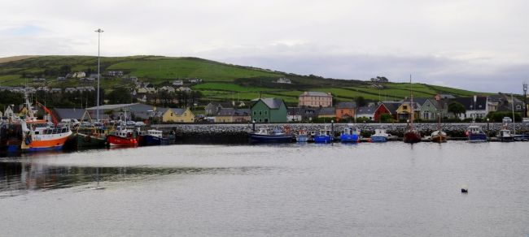
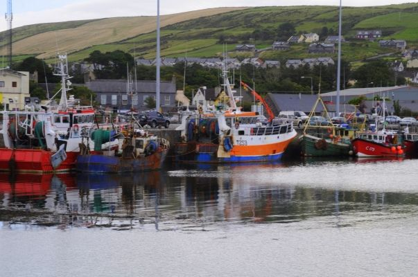
אנחנו מתחילים מכיוון ה-Slea head והכביש מתפתל לו על פני תהום כשמטה ובאופק האוקיינוס... המראות מדהימים.
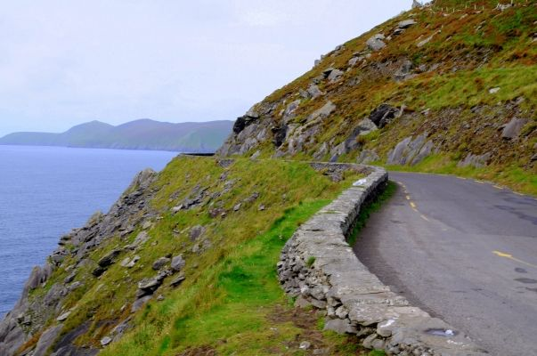
בדרך יש המון חוות המשחזרות את החיים של פעם (עלות כניסה סמלית של 2 יורו) אנחנו ויתרנו.
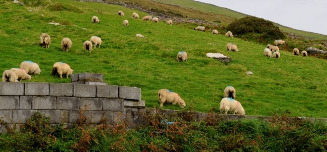
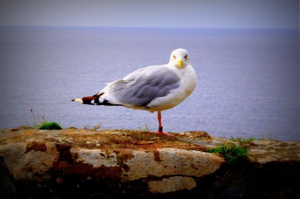
בהמשך מגיעים לחוף (בקיץ זה חוץ רחצה אולם קיץ 2012 היה הגשום ביותר מזה 60 שנה) אבל אני רחצתי את הרגליים!
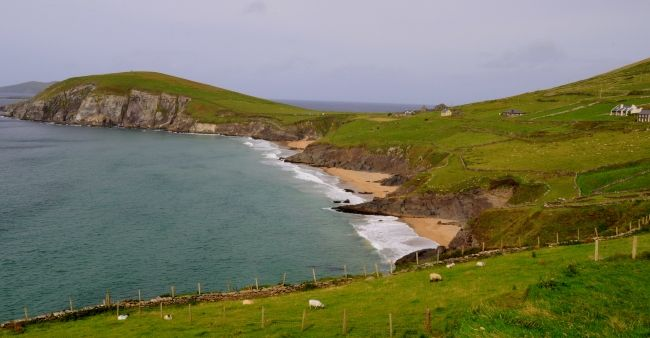
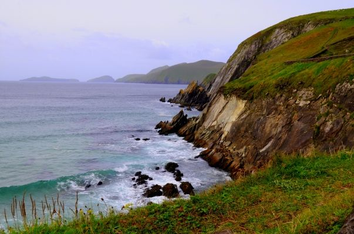
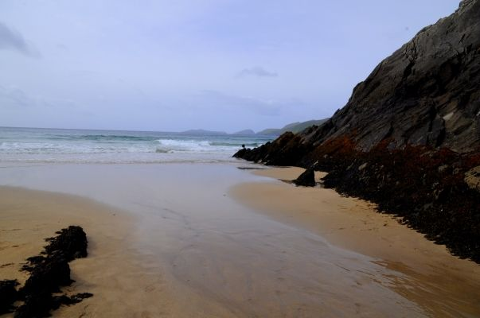
משם הגענו לצוקים המשקיפים על המפרצונים של חצי האי, כשברקע ההר המרכזי של דינגל (עליו כבר לא טיפסנו).
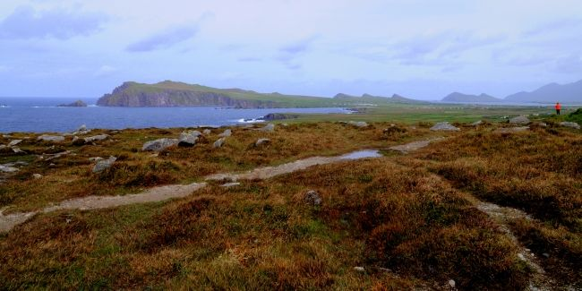
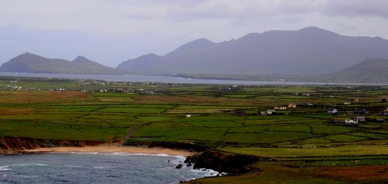
סיימנו את ההקפה בכשלוש שעות והמשכנו במסלול – להגיע היום עד לצוקי מואיר. הדרך הקצרה ביותר היא לקחת מעבורת בטאברט (עיירה קטנה ושקטה), אנחנו מגיעים לשם ומגלים שיש לנו שעה שלמה עד המעבורת הבאה אז קופצים לאכול המבורגר באחד הפאבים בעיירה (אגב בכל הפאבים הם צופים במרוצי סוסים זה הספורט הלאומי...), שבעים עולים על המעבורת ואחרי הפלגה של חצי שעה אנחנו בקיליור.
לא רחוק משם יש את מצוקי קילקי ששמעתי שגם הם יפים אבל אנחנו ממשיכים הלאה לכיוון צוקי מויאר אליהם אנחנו מגיעים בשבע בערב. השיקול שלנו להגיע לצוקים בשעה מאוחרת הוא כדי לצפות בהם על רקע השקיעה וכן כי בשעות הבוקר יש עדיין ערפילים במקום שפוגע בראות. כמו כן אחרי שעות הפעילות (שש בערב) אין צורך לשלם "דמי חניה" ( כ-8 יורו) הכל ריק ויש חנייה בשפע. החיסרון – אין שירותים (כי זה במרכז המבקרים שכבר סגור). אמנם ספטמבר אך עדיין יש אור, זו בדיוק שעת השקיעה (אבל בגלל שהיום סגרירי ומעונן אנחנו לא זוכים לראות את השמש השוקעת אלא רק אפור) עדיין הצוקים מהממים. במקום יש מרכז מבקרים הבנוי כמו מאורת הוביטים (כדי למזער את הפגיעה בטבע) בסמוך למרכז המבקרים איזור הצוקים מתוחם ע"י גדר ככה שיחסית יש הגנה מהרוח (אבל קר מאוד במקום). ניתן לטייל על פני טיילת של כ600 מטר על למגדל אובריין. בצד השני יש שער קטן שניתן לצאת דרכו וללכת לאורך הצוקים עד ל- hag's head הליכה של כשני קילומטר (על אחריות המטייל הרוחות שם מאוד חזקות והשביל קרוב לתהום וולא מעקה בטיחות).
אנחנו מטיילים במקום כחצי שעה וממשיכים לעיירה דולין לחפש מקום לינה. למה דולין? זו עיירה קטנה וציורית וממש חמודה. גם שם לא חסר B&B בעליות שונות (בין 50-70 יורו לזוג) אנחנו מתמקמים בB&B במרכז העיירה (lorilinehouse) בחדר חביב, אחרי מקלחת החלטנו לצאת לפאב היחיד שיש בעיירה (o'conell's) וכאן החוויה האמיתית, בחוץ גשם ורוח חזקה אין תאורה כלל (רק ברחוב הראשי יש מספר פנסים), אנחנו חמושים בפנס קטן צועדים לכיוון האור בקצה הרחוב (מזלנו שהB&B קרוב אחרת הצעדה ארוכה יותר), נכנסים לפאב ב21:50 ועדיין מספיקים להזמין נשנוש מהמטבח (שאוטאוטו נסגר). בפנים אווירה אירית טיפוסית: מוזיקה ריקודים, אירים שמחים ושיכורים בירה שזורמת כמו מים ממש כיף. ישבנו שם שעה ופרשנו לישון.
יום 6: גאלוויי עיר הסטודנטים
אנחנו קמים לעוד בוקר סגרירי, מחלון החדר אנחנו רואים סוס מלחך עשב בגינה, אוכלים ארוחת בוקר על מרפסת שמש (רק חבל שמעונן) ממש אווירה כפרית. היום נוסעים לגאלווי.
הדרך לוקחת אותנו דרך איזור שנקרא הבארן (שממה) מדובר בשטח ענק של סלעים לבנים ואפורים הפזורים עד הים. היום מתחיל להתבהר באופק אבל אצלנו מטפטף. הראות מעולה וניתן לראות את איי ארן באופק עם קשת מהממת מעליהם.
אנחנו מצטלמים קצת בבארן וממשיכים הלאה. הדרך לגאלווי ממש יפה, עוברת דרך עיירות חוף, מפרצים וטירות, בינתיים השמיים הולכים ומתבהרים (עם טפטופים מעת לעט).
אנחנו מגיעים לגאלווי בסביבות 11 בבוקר ומיד מחפשים מקום לינה (כדי שנוכל לטייל בשקט בעיר) מצאנו אחד במרחק 10 דקות הליכה מהמרכז (Beech house), התמקמנו ויצאנו לקנות כרטיסים להפלגה לאיי ארן למחר (25 יורו לאדם הלוך וחזור). בינתיים ענן הגשם הגיע והתחיל לרדת גשם, אנחנו נכנסנו למסעדה לארוחת צהריים מוקדמת. הגשם פסק להיום, במקומו שמים כחולים עננים לבנים קטנים ושמש (ממש גלויה) אנחנו מטיילים בעיר וגם קצת בנמל, מתעייפים וחוזרים לחדר למנוחת צהריים.
בסביבות שש בערב אנחנו יוצאים לטיול לטיילת המפורסמת הקאדאך. הנוף משגע, הבתים הצבעוניים על חזית המים, הירוק של הדשא השמש השוקעת לאיטה והאוקיינוס המדהים! טיילנו עד המגדלאור וחזרנו. בזמן הזה ניתן לראות ממש את ההבדל בין הגאות והשפל – בצהריים בשעת הגאות הסירות צפו במים ופתאום עכשיו הן עוגנות על החול... סיימנו את הערב עם קפה אירי ועוגה, טיילנו קצת בטיילת המרכזית של העיר (המלאה במופעי רחוב) וחזרנו לישון.
מה שמאוד הפתיע אותנו זה שהעיר היא צעירה – עיר סטודנטים ויחד עם זאת בשעה 10 בלילה הרחובות ריקים, מרכז העיר מתרוקן, כל אמני הרחוב מתקפלים ופשוט דממה... זה משהו שקשה לנו מאוד לעכל שבשעות כאלה כבר כולם ישנים... אז גם אנחנו J
יום 7: איי ארן
עוד יום סגרירי ומעונן מקבל את פנינו. אנחנו נוסעים לעיירת הנמל רוסאוול (כ40 דקות נסיעה מערבה מגאלווי) משם יוצאת המעבורת לאיים. בכל הטיפים שקראתי לגבי הנסיעה לאיים כולם היו שנויים במחלוקת, חלק מאוד התלהבו והיללו וחלק טענו שמיותר, אני החלטתי שיהיה נחמד לנסות לראות סך הכל יש שם אתרים מעניינים מאוד... יצאנו במעבורת של 10:30 בבוקר (קנינו כרטיס הלוך וחזור לאותו יום – חזור ב17:00 אבל בגדול ניתן גם להקדים - בחודשים יולי אוגוסט), פחדתי שתהיה לי מחלת ים אז לקחתי כדור, בפועל לא יודעת אם הכדור עזר או שלא הייתה מחלת ים, אבל מה שכן המעבורת שטה מהר, ממש מהר התחושה היא כמו במתקן הפיראטים בלונה פארק ממש רוכבים על הגלים. הרוב ממליצים לתור את האי באופניים ואכן בנמל יש 3 חניות להשכרת אופניים (כולם אותו מחיר 10 יורו), כמובן שניתן גם לקחת סיור ברכב (לא יודעת מה העלות) בדיעבד אולי עדיף והיינו לוקחים סיור ברכב כי מסתבר שהמושג "כמו לרכב על אופניים" לא תמיד תקף על אופניים... למרות שבילדותי רכבתי על אופניים, לקח לי המון מזן למצוא את שיווי המשקל ועד שכבר התחלנו לנסוע וראיתי את הגבעה הראשונה... בשלב הזה החלטנו על אופניים זוגיות! (רק 15 יורו J).
וככה יצאנו, בעלי מדווש מקדימה ואני קצת מאחור, בכל "עלייה" אני יורדת וצועדת רגלית תוך כדי צילומים (אני חושבת שזה השלב שבעלי ממש רצה להרוג אותי, עשיתי לו אימון חבל על הזמן)...
ועכשיו קצת על האיים – ישנם 3 איים כשהיא המרכזי הוא אינישמור ואליו מגיעה המעבורת. בגדול האי עצמו מלא בטרסות אבנים ושטוח לגמרי. באי יש מספר אתרים ממש מגניבים כמו מצודה עגולה, מגדלאור וכן בדרום האי חורים באבן שמתחתם האוקיינוס... ניתן גם ללון במקום (אולם היצע הB&B די מוגבל).
לדעתי מי שממש לא בכושר ורוצה לראות את כל מה שיש לאי להציע כדאי לקחת סיור ברכב – ככה בטוח תגיעו לכל המקומות ה"שווים".
עם האופניים אנחנו חלפנו על פני המגדלאור – אבל לא טיפסנו עד אליו והגענו למצודה העגולה. במקום יש חנייה לאופניים (הכניסה ברגל בלבד בעלות של 6 יורו) במקום קפיטריה המגישה גם אחלה מרקים. אחרי מרק חם (היום ממש קר וסגרירי) התחממנו ויצאנו לדרך, מסלול של קילומטר בעליה קלה, בסופו מגיעים לצוק כשבסופו המצודה, במקום רוחות כאלה חזקות שממש מפחיד להתקרב לצוק, אבל מחזה הגלים המתנפצים מהמם! טיילנו במקום וחזרנו לאופניים.
השעה הייתה כבר שתיים והחלטנו לחזור לאחור (לא ידענו כמה זמן ייקח לנו להגיע לשאר האתרים). את הדרך חזרה עשינו במסלול שעובר סמוך לאוקיינוס, עצרנו לצילומים, בשלוש וחצי חזרנו לעיירה, טיילנו בה קצת (אין כלכך מה לעשות שם) ובארבע לקחנו את המעבורת חזרה.
המסקנה שלי היא שאם יש יום סגרירי וקר מומלץ לוותר – לדעתי ביום שמש הרבה יותר נעים וחוויתי לטייל באי. לשיקולכם. משם המשכנו לעיירה קליפדן שבחבל קונמארה (חבל הביצות של אירלנד), מצאנו לינה ב- B&B בשם RACELODGE בעלות של 60 יורו לזוג, בית ענק!!! בערב כמיטב המסורת יצאנו לפאב, כבר בשלב הזה היינו כלכך כאובים מהטיול באופניים שפשוט נרדמנו מיד.
יום 8: קונמארה
שמש איזה כיף!!! אחרי ארוחת בוקר אירית מזינה אנחנו מוכנים לצאת לדרך. היום מטיילים בחבל קונמארה המפורסם בזכות ביצות הקאבול (המשמש כחובר בעירה) וכן 12 ההרים של קונמארה (בצורת חרוט). אנחנו מתחילים ב-sky road דרך צרה המתפתלת על ההר וצופה על האוקיינוס, המראות מדהימים.
משם נוסעים לכיוון הפארק הלאומי של קונמארה. בדרך רואים שיש אפשרות לעשות דיג באגם אולם לאחר בירורים לא בטוח שהשיט יצא בגלל מזג האוויר (אמנם יש שמש אבל רוחות חזקות מאוד). אנחנו מצטיידים באוכל ברשת spar (הכי זולה באירלנד לטעמנו, מה גם שהם מכינים אחלה סנדביצ'ים ב3 יורו ) והולכים לפארק הלאומי (כניסה חינם).
בפארק יש 4 מסלולים. קראתי שכדאי לעשות את המסלול האדום אשר עולה על ההר ושהוא לא קשה במיוחד (4 ק"מ) אז הלכנו עליו. ההליכה נעימה בסמוך לחוות סוסים קטנה. בהמשך השביל מתחיל לעלות ולעלות. מזג האוויר משתנה ככול שעולים גבוה יותר (ההר לא נראה כזה גבוה אבל כשעומדים עליו נשקף נוף מדהים של אגמים, ביצות והרים סמוכים) בשלב מסוים אנחנו קפואים לגמרי ונשאר עוד כשליש עלייה עד הפסגה. זה הרגע בו החלטנו לרדת- ראינו נוף מהמם, ובשביל עוד כמה מטרים לא שווה לחטוף דלקת ריאות כי מתחיל לטפטף והרוח מקפיאה עצמות (בשלב מסוים הפסקתי להרגיש את האף וחצי מהפנים). איך שירדנו מטה – שוב מזג אוויר מצוין. אכלנו את הסנדביצ'ים שלנו בפארק והמשכנו ליעד הבא: מנזר קיילימור.
המנזר יפיפה! ממש ארמון על חופי האגם. לא נכנסנו לסיור בפנים – הסתפקנו בתמונות מבחוץ. המקום ממש מתוייר וכניסה עולה 12!!! יורו. מה גם שדרך ארוכה לפנינו כי אנחנו רוצים להגיע היום לסליגו (כ-200 ק"מ). אז אנחנו מתחילים בנחת את הנסיעה, הדרך מדהימה – אגמים, יערות, כבשים עוצרים ומצטלמים... אבל השמש מטעה ביום הזה כי איך שיוצאים מהרכב מגיעה הרוח המקפיאה ומיד רצים חזרה פנימה.
לקראת שש בערב הגענו לסליגו, נכנסנו לעיר העתיקה בחיפוש אחר ארוחת ערב אבל פתאום הבנו שחבל לבזבז יום שמש כזה יפה (הרוח פסקה) והעדפנו לנצל את שעות האור בשיטוט סביב אגם גיל (איפה שחי הסופר ייטס), האגם מהמם מלא ציפורים שונות – ברווזים ברבורים ועוד, האגם מוקף ביער – ממש מדהים. נרגענו מהנסיעה הארוכה.
כשהתחיל להחשיך החלטנו לחפש לינה בעיירות הסמוכות לסליגו (ממש לא רצינו לישון בעיר אחרי כל בתי הכפר שישנו בהם), מצאנו מקום בעיירה פוינט רוזס B&B בשם Lorras (בעלות של 70יורו לזוג, אבל ממש בית מלון!!!) בעלת המקום כיוונה אותנו למסעדה היחידה שעוד הגישה אוכל (עד 22) נקראת הנריס, ואכן הגענו עשר דקות לפני סגירת המטבח וזכינו לאכול דג מעולה!!! המסעדה עצמה מעוצבת כמו ספינה, ממש מקום נחמד. חזרנו ל"מלון" שבעים ומרוצים.
שבועיים באירלנד - חלק 3
החלק השלישי והאחרון של תיאור הטיול שלנו לאירלנד
לכל התמונות מהטיול: https://www.flickr.com/photos/127066806@N05/sets/72157648228850728/
ום 9: צפון מערב אירלנד
קמנו לבוקר סגרירי מאוד, אחרי ארוחת בוקר נסענו לטייל קצת בעיירה פוינט רוזס (איפה שישנו), אבל חוץ מתצפית על מפרץ סליגו בערפל לא מצאנו משהו מעניין.
החלטנו לחזור לאגם גיל ולטייל שם, עשינו עקיפה קטנה שלו, אבל מזג האוויר הערפילי די הוציא לנו את החשק. עברתי על החוברת של מחוז סליגו שלקחנו ממרכז התיירות (מומלץ מאוד להכנס, יש סניפים בכל הערים הגדולות, הם מוציאים חוברת לכל מחוז ויש שם טיפים נחמדים מאוד, החוברות אגב בחינם). מצאנו עיירה בשם קולוני (Colooney) שיש בה הרבה מפלים, אז קפצנו לגיחה קצרה.
אחרי שמיצינו את המפלים התחלנו בנסיעה צפונה למחוז דוניגול (יש שיגידו שזה המחוז הנידח ביותר באירלנד). בדרך עוברים ליד ההר "בן בולבן" הר בצורת שולחן וסמלה של סליגו, אבל פסגתו מכוסה בערפל כך שכמעט ולא ניתן לראות את צורתו.
בדרך עברנו ליד עיירות ומפרצים, טיילנו בנחת, זכינו לראות שוב את תופעות השפל - ניתן להגיע רגלית עד לסירה ש"עוגנת" בנמל...
כשהגענו לדוניגול בסביבות 15:00 ירד גשם. חנינו ליד המרכז לתייר והלכנו למרכז העיר (5 דקות הליכה) בגלל שהתחיל לרדת גשם החלטנו להתחבא בטירה של דוניגול (עלות כניסה 4 יורו פתוח עד 17:00), בסך הכל מדובר בבילוי נחמד של שעה (ומספיק זמן כדי שהגשם יפסק). בטירה מוצגת ההסיטוריה של המשפחה ששלטה במחוז והרבה פריטים שנשמרו מאז.
מסתבר שבאותו יום היה איזה אירוע וזכינו לראות מצעד ותזמורת חוצה את מרכז העיר.
בהמשך מזג האוויר השתפר אז החלטנו לקחת שייט במפרץ (6 יורו לאדם יוצא כל שעה ממש ליד מרכז התיירות). העבנו עוד שעה בנעימים עם מדריך שהסביר על הסביבה ובסוף השיט שר שירים איריים.
השעה שש בערב, לפי הGPS הנסיעה לצוקי הסליב ליג כ-40 דקות אז החלטנו לנסוע כדי לראותם בשקיעה. בדרך מצאנו B&B בשם Hollyplace בעיירה Kylbegs, השארנו את המזוודות והמשכנו לצוקים. הדרך ממש יפה, עוברת לאורך האוקיינוס כשביום יפה ניתן לראות את סליגו ואת ה"בן בולבן". הגענו עד לחניה והשער סגור, חשבנו לתומנו שמשם ממשיכים ברגע והתחלנו ללכת (עלייה קשה ממש) וגם נתחיל הגשם, אני הייתי עדיין נחושה להגיע עד לצוקים כשלהפתעתנו מגיע רכב מכיוון הצוקים עוצר ופותח את השער (שלא היה נעול כלל). מסתבר שסוגרים אותו כדי למנוע מכבשים לשוטט שם, ומהמקום שחנינו בו עד הצוקים יש עוד כ-7 דקות נסיעה! אז החלטנו לחזור למקום מחר.
השעה כבר תשע בערב ואנחנו גוועים ברעב, ואז נזכרתי שבדרך לצוקים, באחד העיקולים היתה מסעדה (kitty kellis) אז לאור המבחר העצום של מסעדות באיזור הלכנו לשם. מדובר במסעדה בעיצוב ביתי וחביב ולאחר שקיבלנו את המנות שלנו (דג סלמון ואווז עם תפוחים) אני חייבת להגיד שזו ה-מסעדה באירלנד! והמחיר- סביר לגמרי (כ-250 ש"ח לזוג). שבעים ומרוצים חזרנו בחושך מוחלט (כן כן בדרך המפותלת) עד לB&B.
יום 10: הצפון
התחנה הראשונה שלנו לבוקר זה היא כמובן הסליב ליג שאותם לא ראינו אתמול. הדרך ממש יפה ועוברת דרך מספר עיירות קטנטנות (זה יום ראשון וכולן נראות כמו עיירות רפאים). הגענו לצוקים (הפעם המשכנו אחרי השער הראשון עד למגרש החניה ממש סמוך לצוקים) והנוף פשוט מהמם! גובהם כ-600 מטר (בעוד שצוקי מואיר "רק" 200) ולמטה האוקיינוס הגועש, באופק ענני סערה, מחזה ממש מרשים. ניתן לבצע מסלולים רבים באיזור כשהמפורסם בהם הוא one man's pass (מעבר ממש צר עד לנקודה הגבוהה ביותר של הצוקים) אותו לא עשינו, אבל עצם החוויה לטייל שם ולראות את הכבשים ואת האגמים הקטנטנים באיזור שווה את כל הנסיעה עד מחוז דוניגול.
חוזרים חזרה ועוצרים לקניות באחד הסופרים של עיירות הרפאים. משם ממשיכים לפנינת החמד של המחוז - פארק לאומי גלנבי Glenveagh national park. הדרך לפארק מרהיבה, הרים ירוקים, אגמים כחולים כחולים והמון נקודות לבנות - הכבשים! הדרך לפארק עוברת ליד ההר הגובה באירלנד ה- Erregal.
הפארק מכיל שבילי הליכה ומסלולים רבים בגבעות וביערות סביבו, אבל המסלול המפורסם ביותר הוא עד הטירה (כ-4 ק"מ סביב לאורך האגם). ניתן גם להגיע באוטובוס (2 יורו או 3 יורו הלוך וחזור), סיור של חצי שעה בטירה 5 יורו. האחוזה נבנתה ע"י אציל מקומי כדי לשמש כטירת ציד אולם הוא לא זכה להגשים את משאלתו היות ומת טרם סיום בניית הטירה. הטירה נוהלה ע"י אלמנתו אשר טיפחה אותה.
אנחנו עשינו את ההשליכה עד לטירה (מידי פעם זכינו לטפטופי גשם), ההליכה נוחה ומישורית ומאוד מומלצת. בטירה טיילנו בגנים היפים אשר נמצאים על שפת האגם. בחזור בגלל הגשם כבר החלטנו לקחת אוטובוס.
אכלנו צהוריים במרכז המבקרים והמשכנו הלאה - לחצות את ה"גבול" לצפון אירלנד! רק שלא היה גבול. שמנו לב שאנחנו בחלק הבריטי רק כשאר ה-GPS הראה את המהירות במיילים פתאום...
אנחנו מגיעים ללונדון...דרי (או דרי בקיצור) העיר שחומותיה נשארו בשלמותן. זה ערב ראש השנה בארץ אז אנחנו מתמקמים בB&B בסמוך למרכז העיר ויוצאים לטייל. כבר הזכרתי שזה יום ראשון? וכן גם בעיר הגדולה לונדונדרי הכל סגור! אנחנו מטיילים על החומות וצופים על העיר, המחזה ממש משעשע - רובע אחד מלא בדגלים בריטיים וממש ממול רובע מלא בדגלים איריים.
בהמשך טיילנו קצת על גדת הנהר וגשר החבלים של העיר כשברקע מגדל השעון (אני קראתי לו ה-small Ben כי הוא ממש הזכיר לי את הביג בן שבלונדון...). למרות שהעיר הומלצה כיעד לטיול ע"י הלונלי פלאנט אנחנו די התאכזבנו. הייתי מצפה שבעיר יחסית גדולה כמו דרי יהיו מסעדות או בתי קפה/פאבים במיוחד לאורך הנהר - הנוף פשוט מהמם. ובמקום זאת יש אולי 3 מסעדות. אז החלטנו לחגוג את ראש השנה במסעדה סינית. וכך נגמר לו היום...
יום 11: חוף אנטרים
היום אנחנו נוסעים לרצועת החוץ הכי יפה בצפון אירלנד. אנחנו שמים פעמנו לדרך הענקים. הדרך עוברת סמוך לקו החוף, הנוף מהמם! חול, שמיים כחולים צוקים ירוקים ובאופק ניתן לראות את סקוטלנד.
כחצי שעה מדרי הגענו לאתר דרך הענקים. מרכז המבקרים פועל כל יום מ-9-19 עלות 8.5 פאונד. במרכז המבקרים צופים בסרט חמוד המתאר את האגדה של המקום:
בעבר חיו שם ענק אירי עם משפחתו, יום אחד הענק האירי בנה גשר עד לסקוטלנד ושם להפתעתו פגש בענק הסקוטי (שהיה גדול ממנו). הענק האירי נהבל וברח לביתו. הסקוטי רדף אחריו ונכנס למערה של האירי שם הענק האירי העמיד פנים שהוא תינוק בעריסה. אשתו של הענק האירי הציעה לענק הסקוטי תה בזמן שהוא מחכה לבעלה שיצא לצוד. הענק הסקוטי כלכך נבהל שמי שהוא ראה הוא "רק" התינוק שהוא מיד ברח. ובדרכו הרס את הגשר בין אירלנד וסקוטלנד.
במקום ניתן לקבל אוזניות המסבירות מה רואים בכל נקודה ונקודה באתר. ניתן להגיע לחוף באוטובוס היוצא ממרכז המבקרים ואפשר גם ללכת ברגל (2 ק"מ). המקום נוצר ע"י לבה שהתקררה עוד התקופת הקרח וכך נוצרו עמודי בזלת. באיזור יש אפילו "כס" שמספרים ששם ישב הענק האירי...
אחרי שטיילנו שם המשכנו לנקודה הבאה - גשר החבלים בקאריק א- רד. הגשר מוביל לאי קטן ויפה מלא ציפורים וכן ניתן לצפות משם על האי ראטלין (אשר אינו מיושב). עלות חציית הגשר היא 5 פאונד (פתוח מ- 10-18). במקום חנייה מסודרת. משם הליכה של ק-2 ק"מ עד הגשר, הנוף יפה ההליכה לא קשה בכלל והגשר- חוויה של ממש. אולם קצר מאוד אבל בהחלט חוויה לחצות את הגשר ולראות שאתם תלויים כמה עשרות מטרים מעל לים הגועש על גשר חבלים מתנדנד...
צהוריים אכלנו במסעדה בעיירה עצמה. התלבטנו קשות אם לעצור ולטייל בבלפסט אז החלטנו פשוט לנסוע ולראות איך יהיה (בערב רצינו כבר להגיע לדאבלין כדי שנוכל למחרת לטייל עוד יום בעיר). התחלנו בנסיעה, השמיים מהממים! גשם ושמש והמון המון קשתות.
אחרי כשעה הגענו לאיזור בלפסט אולם כשראינו את הפקקים החלטנו לוותר על העיר ולנסוע לדאבלין.
החלטנו שאת הלילה אנחנו מבלים בהאות'- Howth (חצי אי שהוא פרבר של דאבלין) קראתי שיש שם מגדלאור מדהים. הגענו להאות' לקראת שבע בערב (3 שעות נסיעה מקאריק א-רד בכביש מהיר וישר...). בהאות' מצאנו B&B והוא היה הכי טוב שהיה לנו באירלנד - 70 יורו לזוג (נשארנו 2 לילות בסוף) חדר ענק ומטופח מאוד מומלץ - Cornervill. בערב אכלנו במסעדת דגים מעולה באיזור נמל העיר (בהמלצת בעל ה-B&B) המסעדה ממש מתחת לתחנת הרכבת ומומלצת בחום.
יום 12: היום האחרון
אנחנו מחליטים לנסוע לדאבלין ברכבת (עדיין סיוטים מהנהיגה בעיר), כרטיס הלוך ושוב 5 יורו לאדם נסיעה של כחצי שעה. ירדנו במרכז העיר והתחלנו לצעוד לכיוון המפעל של גינס. (אפשר לקחת אוטובוס אבל החלטנו ללכת ברגל) לאחר כחצי שעת הליכה הגענו.
לגבי המפעל יש הרבה דעות שונות אם הביקור שם שווה את המחיר (היקר 12 יורו). בסך הכל יש שם 7 קומות של תצוגה והסבר קצר על הכנת הבירה (ההסבר בג'יימסון היה הרבה יותר טוב), ובוסף עולים למעלה לקומה השביעית לשתות כוסית ולתצפת על דאבלין. זה מסוג הדברים שאם לא היינו הולכים היינו מתחרטים אבל כשהיינו שם זה באמת לא מוצדק אז תחליטו לבד...
ארחי המפעל טיילנו קצת על גדת נהר הליפי, קנינו סנדוויץ' מעולה ברשת SPAR, שתינו קפה אירי בפאב O'CONELLS וחזרנו למנוחת צהוריים לעיירה HOWTH. בערב יצאנו לטיול בנמל של העיירה, טיילנו סביב המגדלאור בגדול מאוד נחמד. ארוחת ערב אכלנו שוב באחת המסעדות באיזור.
חזרנו לB&B ושם העברנו את הערב בשיחה עם תיירים מקנדה, עד שפרשנו לישון.
זהו נגמר! מחר בבוקר טיסה דרך ציריך הביתה... :(
מקווה שהצלחתי להעביר לכם את החוויות שלנו בטיול. אנחנו נהננו מאוד! מקווה שגם אתם :)